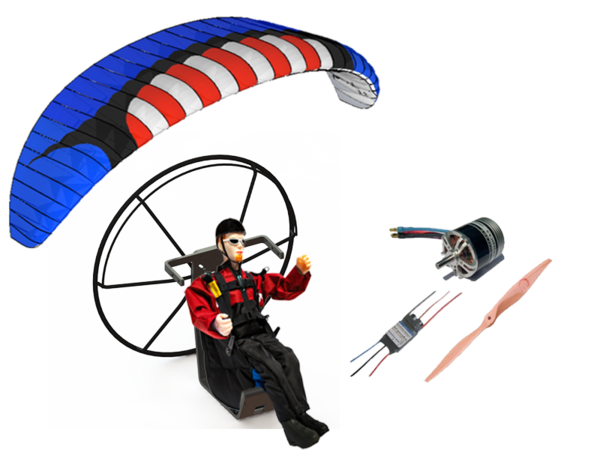
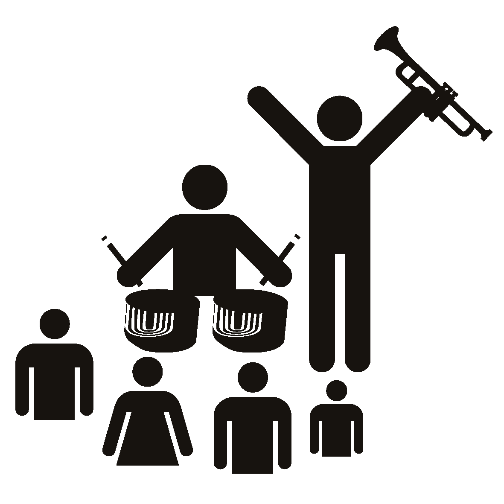
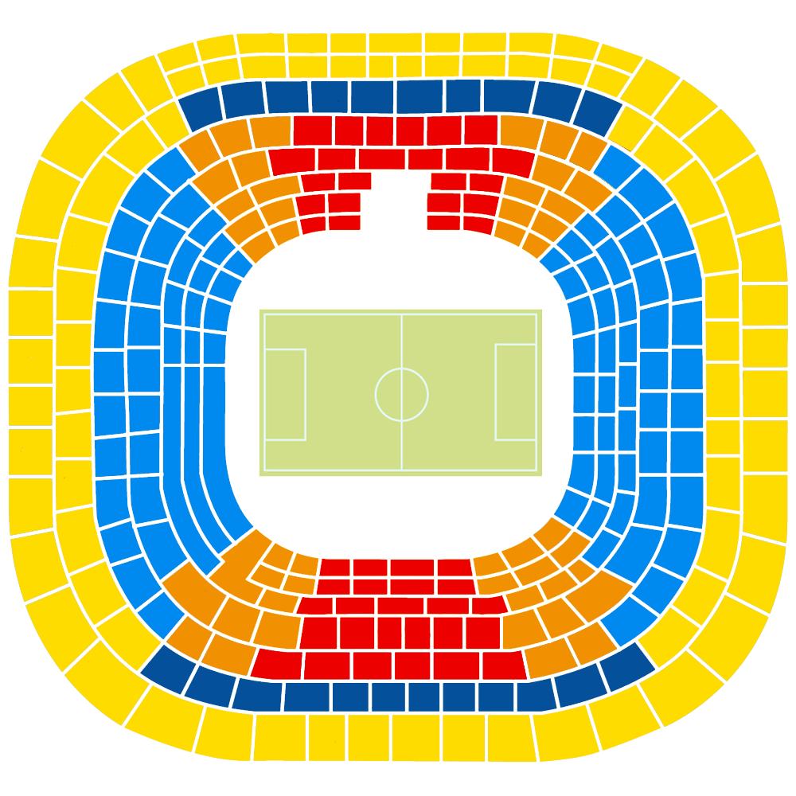
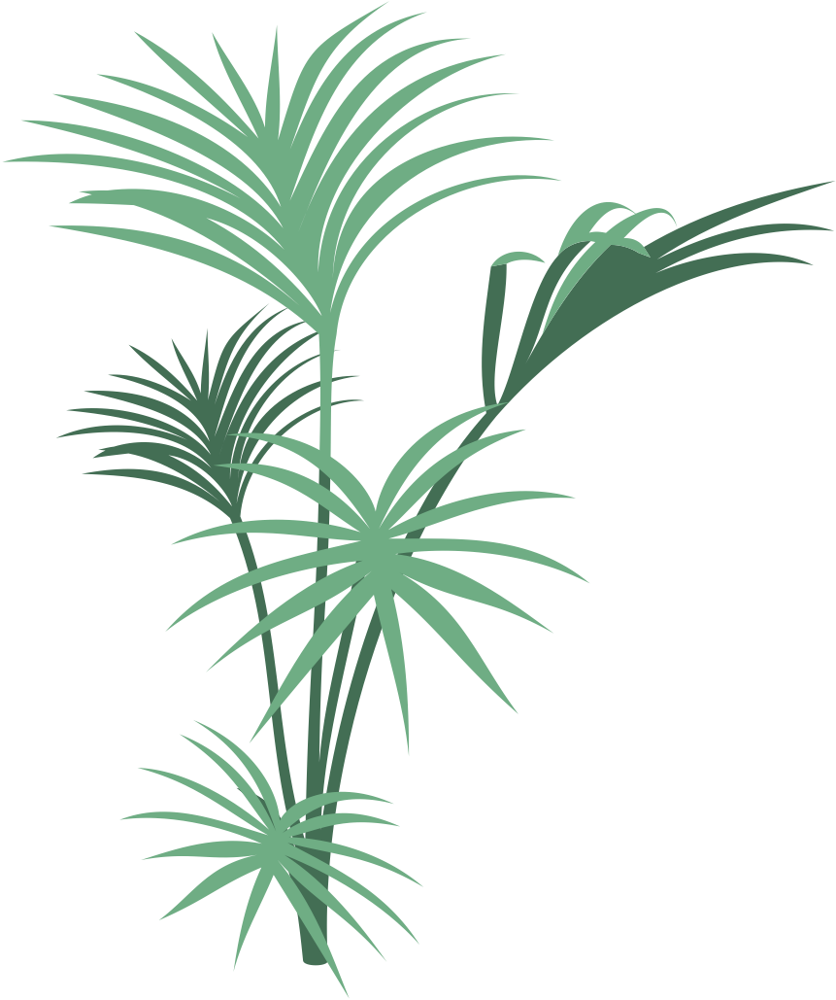
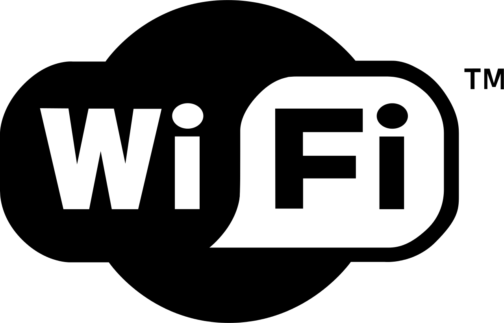
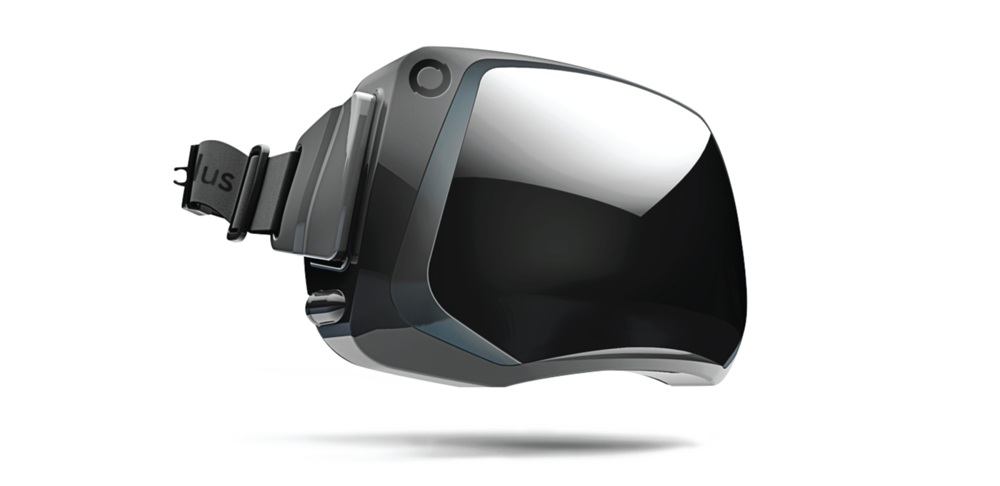
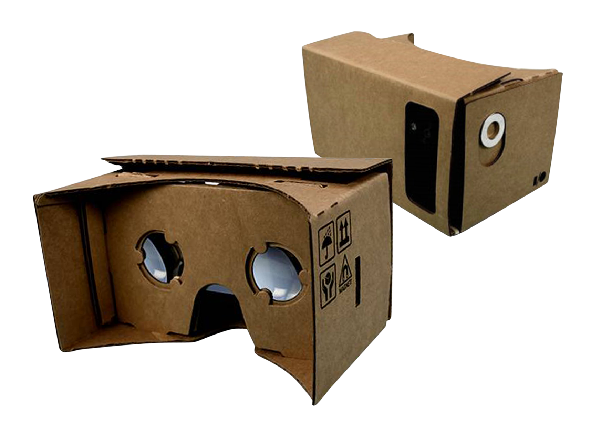
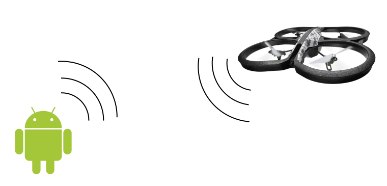
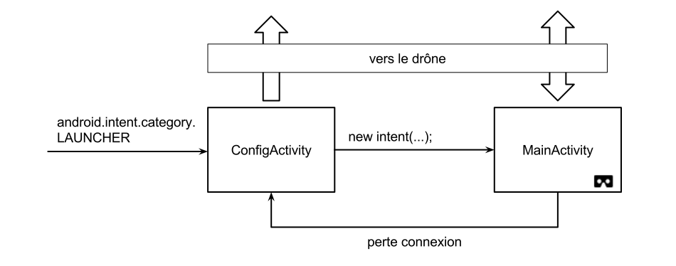
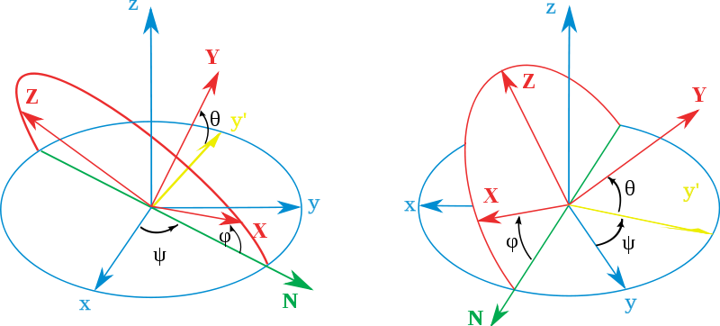

Vision panoramique dans les airs
David LIVET - Jérémie BOUTOILLE - Hugo DJEMAA - Mickael GOUBIN
Juin 2015
Plan
- Le projet et son organisation
- Choix
- Réalisation
Le projet et son organisation
Immersion totale
Donner l'impression à un utilisateur d'être dans un environnement distant
Le drone
Mais aussi
  Le système
- Un dispositif proche de l'utilisateur
- Embarqué au coeur de l'action
- Une connexion les reliant
La connexion
- Excellent débit
- Stable
- Autonome
Choix du matériel embarqué
Donner à l'utilisateur un impact sur ce qu'il voit
Choix du matériel embarqué

User Device
Problématique
afficher le flux à l'utilisateur et l'immerger au mieuxSolution
Dispositif de Réalité VirtuelleL'Oculus Rift
- Deux écrans HD
- Capteurs integrés
- SDK solide et documenté
- ~300 euros
Google Cardboard
- Nombre de Téléphones
- Fait tout comme l'Oculus
- ~30 euros
Plateforme Android
Application Temps Réel
Rendu Vidéo
Réalisation
Servo Server

ServoMoteur ... PWM ... GPIO ... module !
Servo Server

RPi.GPIO : « ... does not support hardware PWM ... »
RPIO : « ... PWM via DMA (up to 1µs resolution) ... »
Servo Server
ServoServerHandler: parse le JSON envoyé par le client- Effectue les actions à l'aide du :
ServoManager: manipule les servos moteurs à l'aide de RPIOCameraManager: lance le flux vidéo
Servo Server
Servo Manager
def move(self, angle):
angle = -89 if angle <= -90 else angle # remove out of bound angles
angle = 90 if angle > 90 else angle
cycle = self.get_duty_cycle(angle)
self.set_dutycycle()
def get_duty_cycle(self, angle):
angle += 90 # between -89 and 90.
return angle * self.angle_180 / 180
def set_dutycycle(self, dutycyle):
self.servo.set_servo(self.gpio, dutycyle)
Servo Server
Camera Manager
class CameraThread(threading.Thread):
def run(self):
self.raspi_p = subprocess.Popen(
"raspivid -t 0 -h 720 -w 1080 -fps 30 -b 2000000 -o -".split(), stdout=subprocess.PIPE)
cmd = "gst-launch-1.0 -v fdsrc fd=0 ! h264parse ! rtph264pay ! " +
"udpsink host=%s port=5004" % self.ip
self.gst_p = subprocess.Popen(cmd.split(), stdin=self.raspi_p.stdout)
ret = self.raspi_p.wait()
ret = self.gst_p.wait()
Base Station Vidéo
-
Déroulement
- Récupérer vidéo avec GStreamer
- Donner le flux vidéo à Android
- Afficher le flux sur le Cardboard
GStreamer
Système de pipeline
Drone :
raspivid -t 0 -h 720 -w 1080 -fps 30 -b 2000000 -o - |
gst-launch-1.0 -v fdsrc fd=0 ! h264parse ! rtph264pay !
udpsink host=192.168.43.93 port=5004Android :
udpsrc port=5004 caps="application/x-rtp, media=video,
clock-rate=90000, encoding-name=H264" !
rtph264depay ! avdec_h264 ! autovideosink
GStreamer - Android
- Utilisation du NDK
- Abscence totale de documentation NDK/GStreamer
-
Android (API) :
- Création d'une
SurfaceView - Récupération d'une
Surfacedepuis laSurfaceView - Don de la
Surfaceà GStreamer au travers du NDK
- Création d'une
-
GStreamer (natif) :
- Lancement du pipeline
- Affectation de la «window» à la
Surface
It works ! Demo time ...
Google Cardboard
- Utilisation de la Cardboard API
- Très récent
- Très peu de documentation
- Utilisation d'OpenGL
- Séparation de l'écran : deux yeux
Google Cardboard
- Déclaration d'une
SurfaceTexture - Don de la
SurfaceTexturepour écrire dessus - A chaque nouvelle frame, appels de deux fonctions
-
onNewFrame()- Préparation de l'affichage
- Similaire pour les deux yeux
-
onDrawEye()- Appliquer effet de distortion de l'image
- Différent pour chaque oeil
-
It works ! Demo time ...
Mise en relation
SurfaceTexture vs SurfaceView
- Les deux reposent sur une
Surface -
SurfaceTexture- Affiche les données sur une
SurfaceOpenGL
- Affiche les données sur une
-
SurfaceView- Vue Android
- Laisse dessiner sur une
Surface
Mise en relation
- Cardboard : obligation d'utiliser une
SurfaceTexture - GStreamer : écrit sur une
Surface
Récupérer la Surface depuis une SurfaceTexture et la donner à GStreamer
Demo ti... ERG ...
It doesn't works !
Au final...
GStreamer ... ?????????????? ... Cardboard
Drone et android
Drone et android
Création d'un réseau wifi à partir du mobile.
Configuration de l'adresse IP du drone depuis le smartphone.
Architecture de l'application
Connexion avec le drone
1. Démarrage de la vidéo
{
type : "stream_state",
status : true
}
2. Envoi d'un mouvement
{
type : "movement",
x : ‐10,
y : 10
}
Sensors
Utilisation accéléromètre et magnétomètre.
Spécificité du systeme Android
- Gestion du cycle de vie d'une activity
- Démarrage d'une nouvelle activity